User guide
Everything you need to use Tidara, from your first click to exporting a 100-year tide file for survey software. No background in oceanography is needed: if a word is new to you, it is explained the first time it appears, and again in the glossary at the end.
1. What Tidara is
Tidara is a free website that tells you how high the sea will be, at any time you choose, anywhere along the coasts and seas of Indonesia. It works in two ways:
- At 303 tide stations. A tide station (or tide gauge) is an instrument in a harbour that measures the height of the sea every minute. Badan Informasi Geospasial (BIG) runs a national network of them. Tidara analysed years of their measurements and learned the "rhythm" of the tide at each one, so it can predict the tide there for any date, past or future.
- At any point at sea. Between the stations, Tidara uses its own sea model, the Tidara Indonesian tide model v1.0, which combines three of the world's best global tide models and then corrects them with the station measurements.
Everything runs inside your web browser. There is no account, no app to install and no server doing the work: once the page has loaded, your own phone or computer does every calculation in a fraction of a second.
Who it is for
2. Tides in two minutes
The Moon pulls on the Earth. It pulls the water on the side facing it a little harder than the Earth's centre, and the water on the far side a little less. The result is two "bulges" of water, one under the Moon and one on the opposite side. As the Earth turns once a day, a harbour passes through both bulges, so many places see two high waters and two low waters a day.
The Sun does the same, but about half as strongly. When the Sun and Moon line up (at new Moon and full Moon), their pulls add together and the tide rises higher and falls lower than usual: a spring tide. A week later, when they pull at right angles, the range is smallest: a neap tide. This cycle repeats about every 15 days.
Indonesia's seas are shallow in places, full of islands, and fed by two oceans, so the tide behaves differently from place to place. Some harbours have two tides a day, some have only one, and the difference between high and low water ranges from less than a metre in northern Sumatra to more than six metres at Merauke. Tidara shows all of this. The Science page explains it in more depth.
3. A tour of the screen
Open the map. On a computer, the screen looks like this:
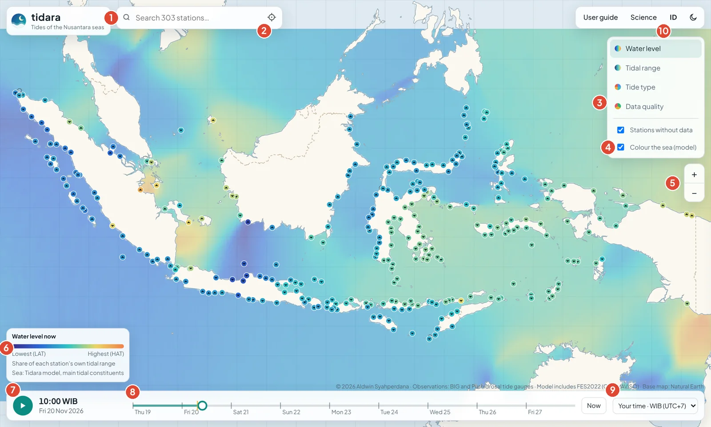
- Search box. Type a station name, its four-letter code, a province or coordinates, then press Enter.
- Coordinates button (crosshair). Opens a box to type a position in any common format.
- Map layers. Choose what the colours show: water level, tidal range, tide type or data quality.
- Colour the sea. Turns the coloured sea on or off. The sea colours come from the Tidara model.
- Zoom buttons. Zoom in and out (you can also scroll or pinch).
- Legend. Explains the colours of the current layer.
- Play button. Animates the tide, one hour per step.
- Timeline. Drag the round handle to any time from yesterday to a week ahead. The thin yellow mark is "now".
- Time zone of the map. Your own time (the default), WIB, WITA, WIT or UTC.
- Language and day/night mode. ID/EN switches between Bahasa Indonesia and English; the moon/sun button switches between the light and dark themes.
Each dot on the map is a tide station. Its colour tells you, for the time on the timeline, how high the water is compared with that station's own lowest and highest tide. Dark blue means close to the lowest, orange means close to the highest. A small arrow inside the dot shows whether the water is rising (▲) or falling (▼). When you zoom in, labels show the station name and the height in metres.
4. Finding a place
Click a station
Click (or tap) any dot. The station panel opens with that station's tide. Hovering over a dot with a mouse shows its name and current height without opening it.
Search
Type in the search box. You can use a name (Makassar), a station code (UJPD), a province (Maluku) or part of a location (Pelindo). Matching stations appear as you type; press Enter or click one to open it.
Type coordinates
Press the crosshair button beside the search box. Choose a format, type the position, and press Predict at this point. Tidara accepts four formats, all on the WGS 84 datum used by GPS:
| Format | Example (Jakarta Bay) | Notes |
|---|---|---|
| Decimal degrees (D.d°) | -6.10, 106.88 | South and west are negative. |
| Degrees, decimal minutes (D° M.m′) | 6° 06.0000′ S, 106° 52.8000′ E | The format most marine GPS units show. |
| Degrees, minutes, seconds (D° M′ S″) | 6° 06′ 00.00″ S, 106° 52′ 48.00″ E | The format used on many documents. |
| UTM | 48S 708057 mE 9325378 mN | Zones 46 to 54 cover Indonesia. |
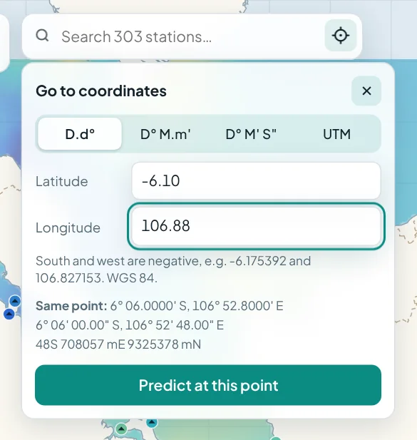
You can also type decimal coordinates straight into the search box, for example -6.05, 106.85.
Links and "remember where I was"
The address bar always shows a link to what you are looking at: …/index.html#SRBY opens Surabaya, and …/index.html#@-6.0000,106.8000 opens that point at sea. Copy the link to share it or to bookmark it.
Tidara also remembers your last place. If you refresh the page or open it again tomorrow, it returns to the same map view and reopens the station or sea point you had selected. Closing the panel with ✕ tells Tidara to forget the selection. This memory stays on your own device; nothing is sent anywhere.
5. Reading the map
The four layers
| Layer | What the colours mean | Useful for |
|---|---|---|
| Water level | How high the tide is right now (at the timeline time), as a share of each place's own range: dark blue = lowest (LAT), orange = highest (HAT). | Seeing where it is high or low water at a glance. |
| Tidal range | The difference between the highest and lowest tide (HAT − LAT), from under 1 m (blue) to 4 m or more (orange). | Knowing where tides are big or small. |
| Tide type | Whether a station has two tides a day (semidiurnal), one tide a day (diurnal), or a mixture. | Understanding the daily pattern. |
| Data quality | Grade A, B or C for each station (see section 12). | Choosing the most reliable station. |
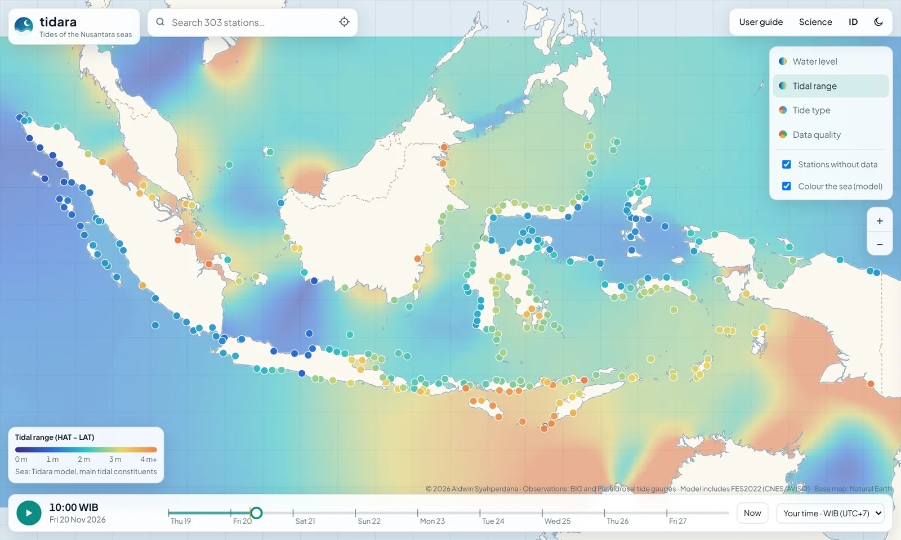
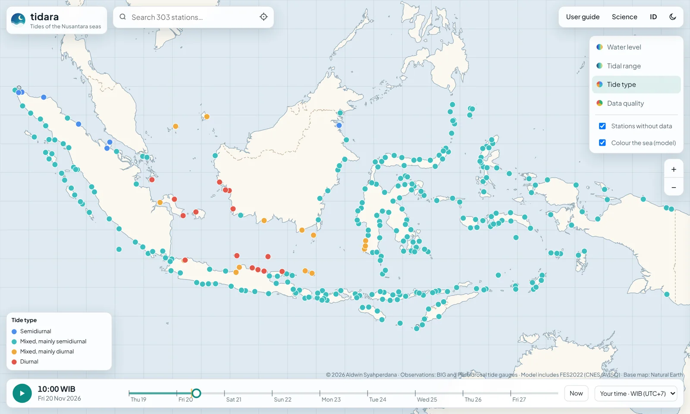
The coloured sea
With the water level layer, the sea between the stations is coloured too, using the same colour scale. The colours come from the Tidara model on a grid of about 14 km, using its ten largest tidal components, which is plenty for a picture. When you tap the sea, the prediction for that point uses the full model. With the tidal range layer, the sea shows the range instead. If you prefer a plain map, untick Colour the sea (model) in the layer menu; Tidara remembers your choice.
Time and the timeline
The timeline at the bottom covers yesterday to seven days ahead. Drag the handle, or click anywhere on the track, to set the map time. Press Now to jump back to the present, and the play button to animate. The clock uses your own time zone (from your device), so a visitor in Jakarta sees WIB and a visitor in Makassar sees WITA. Use the selector at the right to switch the map to WIB, WITA, WIT or UTC.
Stations without data
A few gauges in the network had no usable measurements. They appear as hollow rings. Untick Stations without data to hide them.
Day and night mode
The moon/sun button switches between a light theme and a dark theme that is easier on the eyes at night or on a boat. By default Tidara follows your device's setting.
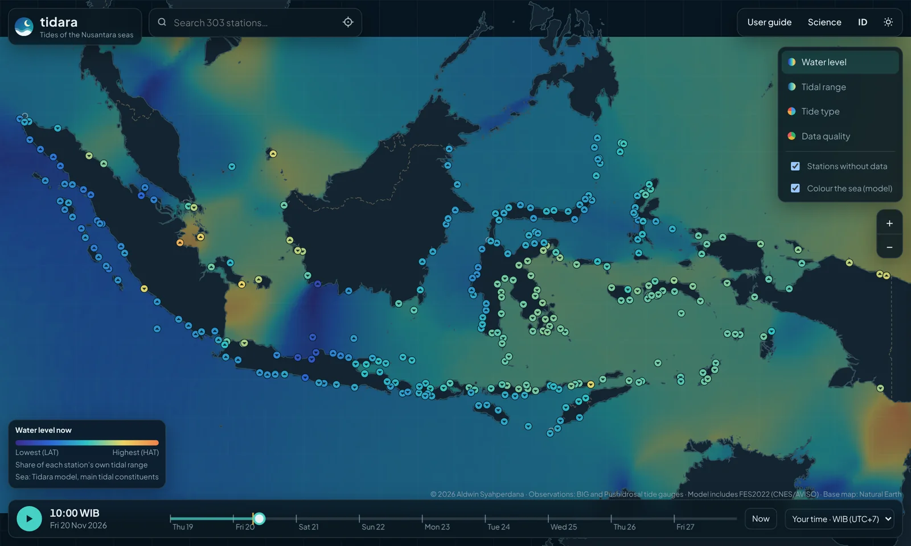
6. The station panel
When you open a station, a panel appears on the right (on a phone it slides up from the bottom). The buttons at the top of the panel (Tide prediction, Tidal levels, Harmonic constants, Station) jump to each part. On a wide screen the ⤢ button makes the panel wider, with two columns.
The header
The name, the station code and the place, then small labels ("chips"): the data quality grade, the tide type and the range (HAT − LAT).
At the selected time
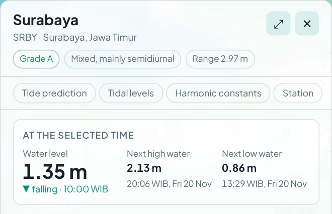
The big number is the height of the water at the timeline time, in metres above LAT (the lowest tide; see section 12). Under it, ▲ rising or ▼ falling. Beside it, the time and height of the next high water and the next low water. Move the timeline and these numbers follow.
Station information
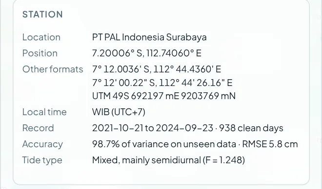
| Line | Meaning |
|---|---|
| Location, Position, Other formats | Where the gauge is, with its coordinates in decimal degrees, degrees and minutes, degrees, minutes and seconds, and UTM. |
| Local time | The station's own time zone. |
| Record | The period of measurements used and how many days of clean data that left. |
| Accuracy | How well the station's prediction matched measurements it had never seen: the share of the water level's ups and downs it explained (98.7% means almost all), and the typical error in centimetres (RMSE). |
| Tide type | The daily pattern, with the number F used to decide it (see section 12). |
Tidal levels
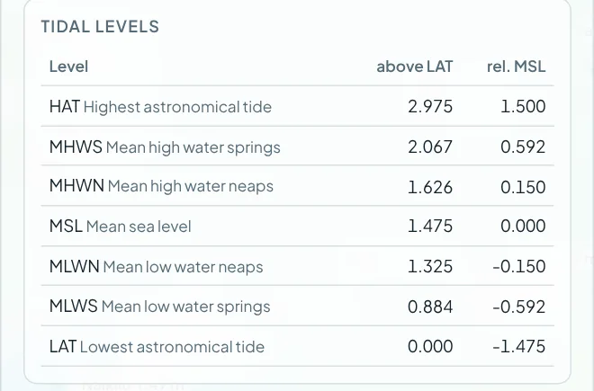
These are the standard reference levels of the tide at this station. The picture below shows what they mean. In short: LAT is the lowest the tide goes, HAT the highest, MSL the average, and the "springs" and "neaps" levels are the typical highs and lows during spring and neap tides.
Harmonic constants
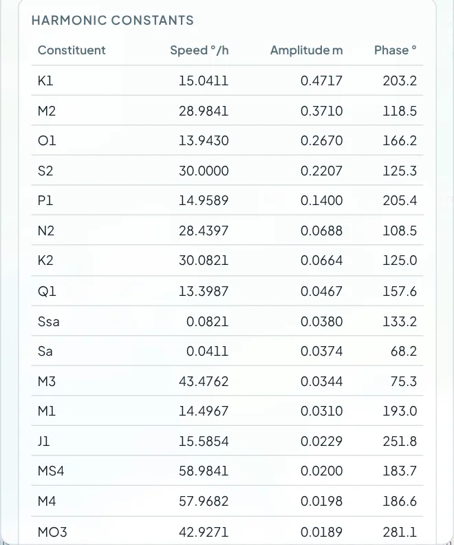
The tide is the sum of many regular waves, each with a fixed speed set by the Moon and Sun. These are called constituents and have short names: M2 (the main lunar wave, twice a day), S2 (the main solar wave), K1 and O1 (once-a-day waves), and so on. For each one, the table gives its speed (degrees per hour), its amplitude (half its height, in metres) and its phase (when its high water arrives, in degrees). These numbers are what Tidara learned from the measurements, and they are all it needs to predict the tide. The panel shows the ten largest; press Show all for the full list.
River-mouth notes
A few gauges are not on the open coast but inside a river mouth, a lagoon or a harbour basin. There, the tide can be smaller and later than at sea, and river water can hold up the low tides, especially in the rainy season. These stations carry an orange River mouth chip and a note at the top of the panel:
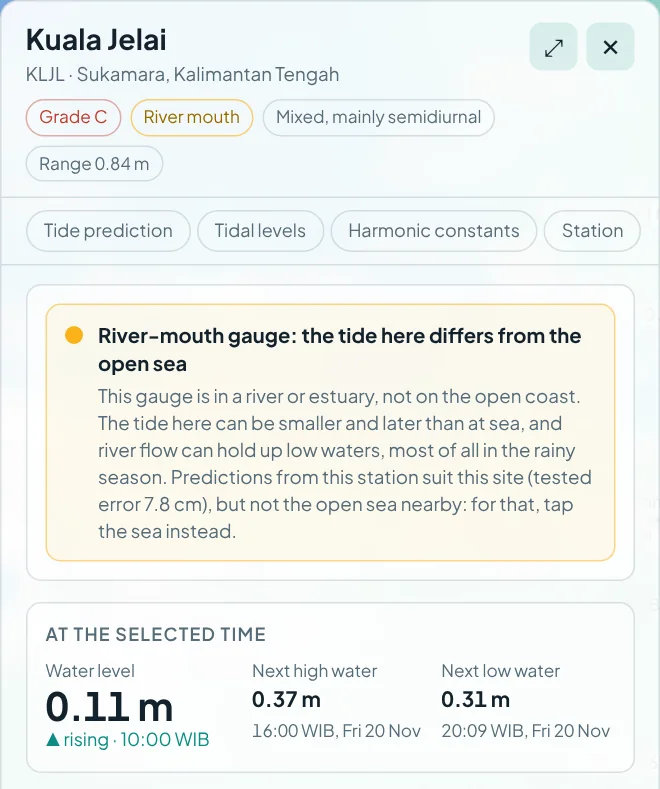
At the moment this applies to Sungai Liat, Glagah, Sunda Kelapa, Kendawangan, Kuala Jelai, Merauke, Padang Tikar, Kuala Tungkal and Pondong. Their predictions are right for the harbour itself; for the sea nearby, tap the sea instead.
7. Making a prediction
The Tide prediction section of the panel computes the tide for any period you like. When you open a station, a three-day prediction from today is made automatically, so you can start reading straight away.
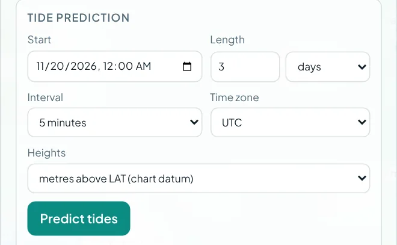
| Setting | What it does | Default |
|---|---|---|
| Start | Date and time of the first value, in the chosen time zone. | Today, 00:00 |
| Length | How long: a number of hours, days, months or years. There is no upper limit; 100 years works. | 3 days |
| Interval | Time between values: 1, 5, 10, 15, 20 or 30 minutes, or 1 hour. High and low waters are always found to the minute, whatever you choose. | 5 minutes |
| Time zone | UTC, your own time, WIB (UTC+7), WITA (UTC+8) or WIT (UTC+9). The station's own zone is marked "station". | UTC |
| Heights | Metres above LAT (like nautical charts and BIG's tide tables), relative to MSL (mean sea level = 0), or relative to HAT (0 at the highest tide, negative below it). | above LAT |
Press Predict tides. A 100-year prediction takes a few seconds and shows a progress bar. One run can hold up to 6 million values; if you ask for more (for example 100 years every minute), Tidara picks the shortest interval that fits and tells you.
Reading the results
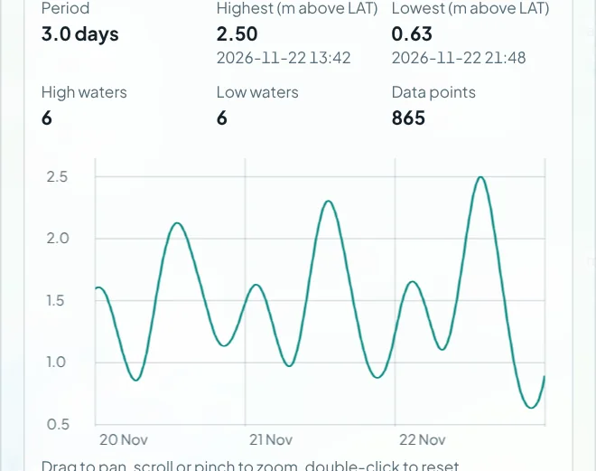
The summary gives the period, the highest and lowest water with their times, and the number of high waters, low waters and values. The chart draws the tide curve. Drag it sideways to move along in time, scroll or pinch to zoom in, and double-click to see the whole period again. Hover or touch to read the exact time and height at any point. When zoomed in, high waters are marked with blue dots and low waters with orange dots.
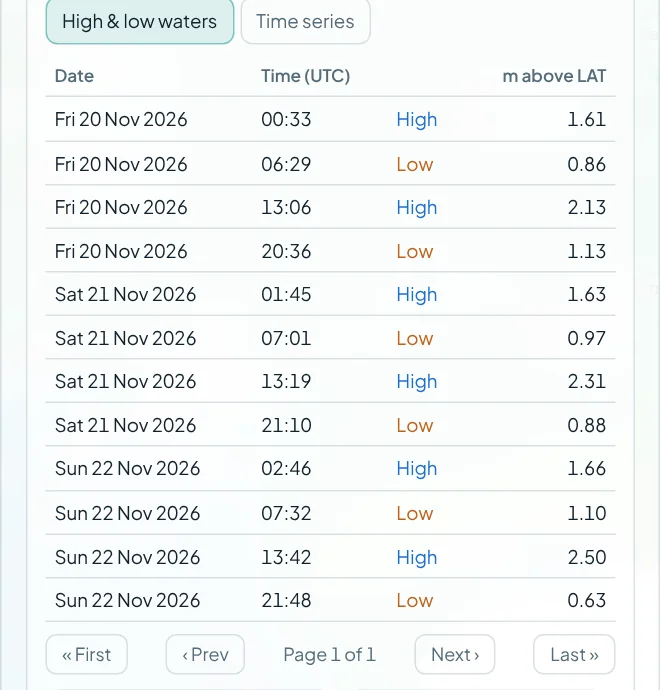
The High & low waters tab lists every high and low water with its date, time and height. Time series lists every value at your chosen interval. Long lists are split into pages; use the buttons underneath to move through them.
Worked example: a morning boat trip
- Open the station. Search for Surabaya and open it.
- Choose your time zone. In Time zone pick WIB · station, so the times match your watch.
- Set the period. Start: tomorrow at 00:00; Length: 1 day. Press Predict tides.
- Read the table and the curve. The High & low waters tab lists each high and low water with its time and height. If your boat needs at least 1.5 m of water over a sandbank charted at 0.0 m (that is, at LAT), plan to cross while the curve is above 1.5 m; hover over the chart to read exactly when it rises above and falls below that line.
8. Any point at sea
Tap the sea anywhere away from a station dot, or type coordinates, and Tidara makes a prediction for that exact point from the Tidara Indonesian tide model v1.0. The point works just like a station: water level now, predictions up to 100 years, tidal levels and harmonic constants.
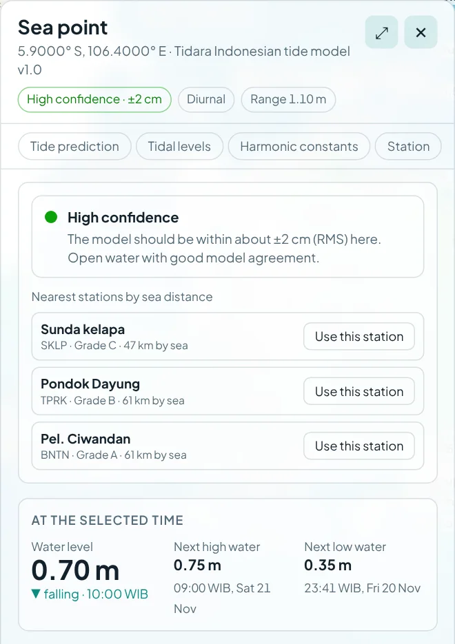
The confidence badge
Every point shows how far the model is likely to be from the truth there, as a typical (RMS) error:
| Badge | Typical error | Where | Advice |
|---|---|---|---|
| High | under about 5 cm | Open water where the models agree and gauges are close | Use it with confidence. |
| Medium | 5 to 10 cm | Coastal waters, between distant gauges | Fine for planning; compare with a nearby station when it matters. |
| Low | over 10 cm | Narrow straits, bays and river mouths smaller than the 14 km grid (for example around Dumai, Bengkalis, Nunukan, Tarakan) | Use with care; prefer a station if there is one nearby. |
Nearest stations by sea
Under the badge, Tidara lists the three closest stations measured along the sea, never across land, so a station on the other side of an island is not suggested. Use this station switches to that station's own prediction, which comes straight from its measurements.
A point on land, or too close to the coast for the model grid, has no model data. Move a little offshore, or use a nearby station.
9. Saving and exporting
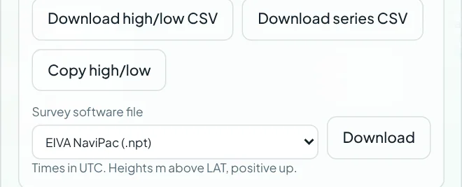
CSV files and copying
Download high/low CSV and Download series CSV save the results as CSV files, which open in Excel, Google Sheets, GIS and engineering software. The first line describes the station, time zone and height reference. Copy high/low puts the table on the clipboard, ready to paste into a spreadsheet or a message.
When the site is in Bahasa Indonesia, the CSV is in Indonesian too: Indonesian column names, Tinggi/Rendah, semicolons between columns and a decimal comma (1,483), which Excel with Indonesian settings opens correctly.
Survey software files
Under the CSV buttons, Survey software file writes the series in formats that survey software reads directly. Heights follow the Heights setting, positive up, and always use a decimal point.
| Format | What the file looks like | How to use it |
|---|---|---|
| EIVA NaviPac (.npt) | 13-11-2026, 00:00:00, 2.550 | Load as a tide file in NaviPac. |
| CARIS HIPS (.tid) | -------- then 2026/11/13 00:00 2.550 | Load as a tide station file; build your own tide zones in CARIS if you need them. |
| HYPACK Manual Tides import (.txt) | 13/11/2026 ⇥ 00:00:00 ⇥ 2.550 (tab-separated) | In Manual Tides, import with tab delimiter and DD/MM dates, then save the .TID with Invert Tides on (HYPACK stores tide as a correction). |
| Qinsy tide data (.qtd) | binary file | Times are always stored in UTC; heights relative to MSL, with MSL above LAT and the station's M2, S2, K1, O1 in the header. Check the first file in Qinsy before survey use. |
10. On a phone
Tidara works the same way on a phone. Drag the map with one finger, pinch to zoom, and tap a dot to open a station. The panel slides up from the bottom; swipe its header down or press ✕ to close it. The search box sits under the top bar.
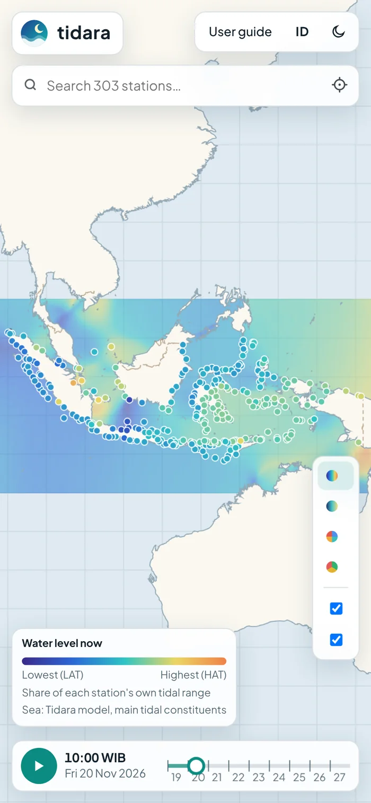
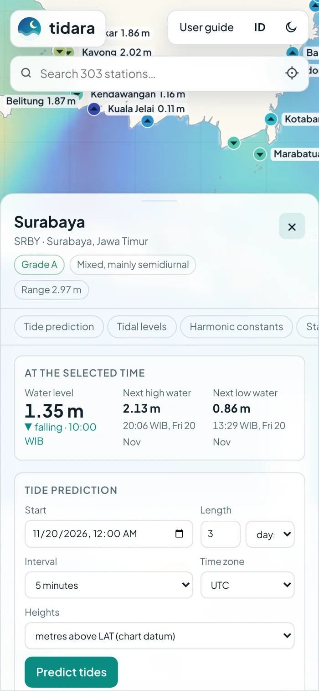
Tip: on most phones you can "add to home screen" from the browser menu, so Tidara opens like an app.
11. More worked examples
A reef walk at low tide (Bali)
- Search Benoa and open the station.
- Time zone: WITA · station. Start: Saturday 00:00, Length: 2 days, Interval: 10 minutes. Press Predict.
- In the High & low waters table, find a low water in daylight. The lower its height above LAT, the more reef will be exposed. Spring tides (around new and full Moon) give the lowest low waters.
A tide file for a survey (Jakarta Bay)
- Tap the sea at your survey area, or type its coordinates with the crosshair button. Check the confidence badge.
- Keep Time zone on UTC. Set Start to the first survey day, Length to the number of days, and Interval to 5 minutes.
- Choose Heights: above LAT (the chart datum your soundings will be reduced to). Press Predict.
- Under Survey software file, choose your format and press Download.
Clearance under a bridge
- Open the station nearest the bridge.
- Choose Heights: relative to HAT. Now 0 m means the highest astronomical tide, and the values show how far below HAT the water is.
- If the bridge's published clearance is given above HAT, add the (positive) distance below HAT to it to get the clearance at each time.
12. Understanding the numbers
| Term | Plain meaning |
|---|---|
| LAT · Lowest Astronomical Tide | The lowest the tide gets over a full 18.6-year cycle of the Moon. Used as chart datum: depths on nautical charts are measured from it, so "height above LAT" adds directly to a charted depth. |
| HAT · Highest Astronomical Tide | The highest the tide gets over the same cycle. |
| MSL · Mean Sea Level | The average sea level at the gauge over its record (2021–2026). |
| MHWS / MLWS | Mean high / low water at spring tides: the typical highest and lowest levels around new and full Moon. |
| MHWN / MLWN | Mean high / low water at neap tides. Where the solar tide is bigger than the lunar one, these can come out reversed; use HAT/LAT and the predictions there. |
| Range | HAT − LAT: the full height difference between the highest and lowest tide. |
| Tide type and F | F compares the once-a-day waves with the twice-a-day waves: F = (K1 + O1) / (M2 + S2). F ≤ 0.25: semidiurnal (two tides a day). 0.25–1.5: mixed, mainly semidiurnal. 1.5–3.0: mixed, mainly diurnal. Over 3.0: diurnal (one tide a day). |
| Grade A | At least a year of clean data, and at least 95% of the water level's variation explained on data held back from the analysis. |
| Grade B | Good constants from a shorter record, or 90–95% explained. |
| Grade C | Short or difficult records. Check against observations before relying on them. |
| Skill (% of variance) | How much of the measured ups and downs the prediction reproduces on data it never saw. 100% would be perfect; the median station scores 97.9%. |
| RMSE | Root-mean-square error: the typical size of the difference between prediction and measurement, in centimetres. Weather is included in that difference. |
| Confidence (sea points) | The model's estimated typical error at that point: High under 5 cm, Medium 5–10 cm, Low over 10 cm. |
| UTC, WIB, WITA, WIT | Coordinated Universal Time, and Indonesia's three time zones: UTC+7, UTC+8 and UTC+9. |
13. Questions and troubleshooting
Why does the real sea differ from the prediction?
Tidara predicts the tide caused by the Moon and Sun. Wind, air pressure, monsoon sea-level changes, river floods and waves add or remove water on top of that. Typical differences are 5–15 cm, and more during storms.
Why can a very long prediction go slightly below LAT?
LAT is computed over 2026–2044. Over a century the Moon and Sun line up in slightly more extreme ways now and then, so values a few centimetres below 0 m above LAT can appear in very long runs. That is expected.
Are 100-year predictions reliable?
The astronomy is predictable for centuries, so the timing and size of the tides stay accurate. What no tide prediction can know is how mean sea level itself will change through sea-level rise, land subsidence or harbour works. For long-term design, add a sea-level scenario separately.
Which time zone should I use?
UTC for survey software, science and combining stations in different zones. The zone marked "station" for a tide table to use on site. "Your time" for your device's zone, including daylight saving abroad.
The page doesn't remember my station.
Private or incognito browsing, or a browser that blocks site storage, prevents Tidara from remembering. Use a bookmark of the station's link instead.
Nothing happens when I tap the sea.
The point may be on land or closer to the coast than the 14 km model grid reaches. Tap a little further offshore.
A download doesn't start.
Some in-app browsers block downloads. Open Tidara in your normal browser, or use Copy high/low.
14. Data, credits and licences
- Tide gauge observations: Badan Informasi Geospasial (BIG) national tide gauge network.
- Additional tide gauges: Pusat Hidro-Oseanografi TNI Angkatan Laut (Pushidrosal), used with permission. Tidara's predictions are not official Pushidrosal predictions.
- Global tide models: EOT20 (DGFI-TUM, CC BY 4.0); GOT5.5/5.6 (R. Ray, NASA Goddard Space Flight Center); FES2022. The FES2022 Tide product was funded by CNES, produced by LEGOS, NOVELTIS and CLS and made freely available by AVISO. Tidara's predictions are derived from the original FES2022 dataset; the FES2022 data themselves are not redistributed (licence).
- Base map: Natural Earth (public domain).
- Font: Plus Jakarta Sans (SIL Open Font Licence).
Tidara is a free, non-commercial project by Aldwin Syahperdana. © 2026, all rights reserved.
15. For technical users: hosting the site
Tidara is a static website: copy the whole folder to any web host (GitHub Pages, Netlify, an S3 bucket or a company server) and open index.html. It also runs straight from the folder on your computer.
| File | Purpose |
|---|---|
index.html | The map and prediction tool |
guide.html, science.html | This guide and the science background |
docs/ | PDF versions of the guide and science pages, and their images |
assets/tidara-data.js | Station information, tidal levels and harmonic constants |
assets/tide-engine.js | The prediction engine (also used in a background worker) |
assets/model/ | The Tidara model: tiles loaded when you tap the sea, and the sea-colour field |
assets/basemap.js | Coastlines and borders (Natural Earth) |
assets/prefs.js, assets/site.css, assets/logo.svg | Remembered settings, styles for these pages, and the logo |